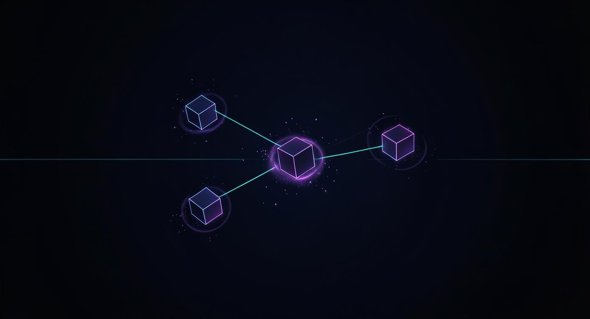
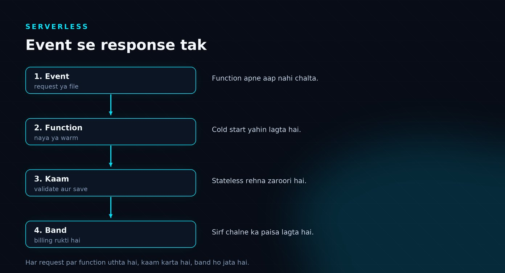
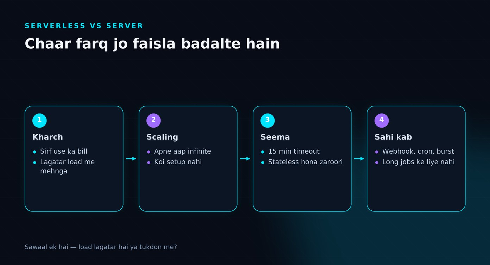

Serverless Kya Hai? Lambda, Cold Start aur Kab Sahi Hai

"Serverless" नाम सुनकर लगता है कि server ही नहीं होता। सच यह है कि server होता है — बस उसे आप नहीं सँभालते। आप एक function लिखते हैं, बताते हैं कि उसे कब चलाना है, और platform बाकी सब करता है: machine उठाना, code चलाना, load के हिसाब से बढ़ाना और बंद करना। आपको बिल सिर्फ़ उस समय का लगता है जब code असल में चला।
इस guide में मैं serverless का basic model खोलूँगा, AWS Lambda के limits, cold start की सच्चाई, खर्च का गणित, वे design patterns जो अच्छे चलते हैं, testing और debugging, और वे हालात जिनमें serverless गलत चुनाव है। साथ में छह गलतियाँ भी, जो पहली बार में सब करते हैं।
छोटा जवाब: Serverless में आप code (function) लिखते हैं और platform उसे event पर चलाता है — HTTP request, file upload, queue message या schedule. आप server, OS या scaling नहीं सँभालते, और बिल सिर्फ़ execution time और requests पर आता है। यह उन कामों के लिए बेहतरीन है जो रुक-रुक कर आते हैं; लगातार भारी काम के लिए अक्सर महंगा पड़ता है।
Serverless ka model
पारंपरिक setup में आप एक machine लेते हैं जो 24×7 चलती है। अगर रात 2 बजे कोई request नहीं आई, तब भी वह machine चल रही है और बिल बन रहा है। Serverless में ऐसा नहीं — platform request आने पर function चलाता है, काम खत्म होते ही बंद कर देता है।
तीन चीज़ें इस model को बनाती हैं। पहली — event: function अपने आप नहीं चलता, किसी घटना पर चलता है। दूसरी — stateless: हर execution अलग है; पिछली बार का data भरोसे से नहीं मिलेगा। तीसरी — managed scaling: एक साथ हज़ार requests आएँ तो platform हज़ार executions चला देता है — बिना आपके कुछ किए।

Stateless होने का असर यह है कि आपको हर चीज़ बाहर रखनी पड़ती है — session database में, file storage में, cache किसी managed service में। यह शुरुआत में झंझट लगता है, पर बाद में फायदा देता है, क्योंकि कोई भी instance कभी भी बंद हो सकता है।
AWS Lambda: limits jo pata hone chahiye
Lambda सबसे आम serverless service है। इसकी कुछ सीमाएँ हैं जो design पर सीधा असर डालती हैं।
| चीज़ | सीमा |
|---|---|
| Execution timeout | 15 मिनट |
| Memory | 128 MB से 10 GB |
| Deployment package | 50 MB zipped, 250 MB unzipped |
| Ephemeral storage | 512 MB (बढ़ाया जा सकता है) |
| Concurrent executions | Region के हिसाब से limit, बढ़ाई जा सकती है |
यहाँ सबसे बड़ी बात है 15 मिनट की सीमा। लंबे video processing, बड़े report generation या heavy ML training Lambda पर नहीं चलेंगे। उनके लिए container, batch job या अलग compute चाहिए — और Lambda को सिर्फ़ trigger के लिए रखें।
Memory का चुनाव भी दिलचस्प है। Lambda में CPU memory के साथ बढ़ता है — ज़्यादा memory का मतलब तेज़ function. कई बार 512 MB से 1 GB पर जाने से समय आधा हो जाता है और कुल बिल कम हो जाता है, क्योंकि बिल समय × memory पर है। इसलिए इसे नापकर चुनें, अंदाज़े से नहीं।
Cold start ki sacchai
Cold start तब होता है जब platform को function के लिए नया environment बनाना पड़ता है — code download, runtime शुरू, और आपका initialization code. इसमें कुछ सौ मिलीसेकंड से लेकर कुछ सेकंड लग सकते हैं, खासकर Java या बड़े packages में।
अगर function कुछ समय में फिर चला, तो वही environment दोबारा इस्तेमाल होता है और cold start नहीं होता (warm start)। इसीलिए लगातार traffic पर यह समस्या कम दिखती है और रुक-रुक कर आने वाले traffic पर ज़्यादा।
इसे कम करने के चार तरीके हैं। पहला — package छोटा रखें; सिर्फ़ ज़रूरी dependencies. दूसरा — initialization code को handler के बाहर रखें, ताकि वह हर invocation पर न चले। तीसरा — provisioned concurrency इस्तेमाल करें, जो कुछ instances पहले से तैयार रखता है (पर बिल बढ़ता है)। चौथा — हल्का runtime चुनें, जैसे Node.js या Python.
// handler ke bahar — ek hi baar chalta hai
const db = createConnection();
exports.handler = async (event) => {
return await db.query("SELECT 1");
};Kab sahi hai, kab nahi

Serverless सही है जब: traffic अनियमित हो (रात में कम, दिन में ज़्यादा), काम छोटा हो (कुछ सेकंड), webhook या scheduled job हो, और team छोटी हो जिसे server नहीं सँभालना। उदाहरण — contact form, image thumbnail, daily report, payment webhook.
Serverless गलत है जब: काम लगातार भारी हो, WebSocket या लंबे connection चाहिए, बहुत बड़ा package हो, या latency बहुत कम चाहिए (जैसे game server)। इन हालात में एक चालू machine या container सस्ता और सरल पड़ता है।
एक और हालत जो अक्सर छूट जाती है — database connections. हर Lambda invocation का अपना connection होता है, और अचानक हज़ार invocations से database के connections खत्म हो सकते हैं। इसका हल connection pooling service या RDS Proxy जैसा tool है, वरना database "too many connections" कहकर मना कर देगा।
Kharch ka ganit
Serverless का बिल दो चीज़ों पर है — requests की संख्या और execution का समय × memory. एक उदाहरण: महीने में 10 लाख requests, हर request 200 मिलीसेकंड, 512 MB memory. कुल समय 2,00,000 सेकंड × 0.5 GB = 1,00,000 GB-seconds. अगर दर $0.0000166667 प्रति GB-second है, तो लगभग $1.67 — यानी बहुत कम।
पर यही function अगर हर request पर 3 सेकंड ले और 1 GB memory माँगे, तो वही 10 लाख requests 30,00,000 GB-seconds बन जाती हैं — लगभग $50. और अगर traffic 10 गुना हो जाए, तो $500. इसीलिए serverless में performance सीधे पैसे से जुड़ी होती है; एक धीमा function महंगा function है।
एक practical आदत — हर function का समय और memory नापें, और महीने में एक बार सबसे महंगे तीन functions देखें। अक्सर वहाँ एक ऐसा function मिलता है जो बहुत बार चलता है पर उसका काम किसी और step में हो सकता था।
एक और बात जो बिल को चुपचाप बढ़ाती है — concurrency. अगर आपका function किसी बाहरी API को बुलाता है जो धीमा है, तो हर request के लिए एक instance चलेगा और हज़ारों instances बन सकते हैं। इसे reserved concurrency से सीमित करें, और बाहरी calls के लिए timeout रखें। वरना एक धीमा third-party service आपका बिल और आपकी latency दोनों बढ़ा देगा।
Design patterns jo achhe chalte hain
1. API + function. HTTP request आती है, function validate करता है, database में लिखता है, जवाब देता है। सबसे आम pattern.
2. Queue + worker. ज़्यादा भारी काम queue में डालें और अलग function से निकालें। इससे timeout की समस्या कम होती है और retry अपने आप मिलता है।
3. Scheduled job. रोज़ सुबह report बनाना या cache साफ़ करना — cron की जगह event rule.
4. Event-driven. File upload होते ही thumbnail बनाना, या database बदलते ही notification भेजना। इसमें function को किसी ने बुलाया नहीं, घटना ने बुलाया।
इन चारों में एक बात समान है — काम छोटा और साफ़ होना चाहिए। एक function में पाँच अलग काम डालने से timeout, debugging और permissions तीनों मुश्किल हो जाते हैं।
Lambda ke bahar: baaki options
Serverless सिर्फ़ Lambda नहीं है। अगर आपको request का जवाब बहुत तेज़ चाहिए और function छोटा है, तो Cloudflare Workers या Vercel Edge Functions बेहतर हैं — वे दुनिया के कई शहरों में चलते हैं और cold start बहुत कम होता है।
अगर काम लंबा है — जैसे 30 मिनट का video render या बड़ा report — तो serverless containers (Cloud Run, Fargate) या batch jobs सही हैं, क्योंकि वहाँ 15 मिनट की सीमा नहीं होती। और अगर काम बहुत भारी और लगातार है, तो सीधे एक चालू server या cluster सस्ता पड़ेगा।
चुनाव का सबसे साफ़ तरीका यह है कि पहले तीन सवाल लिखें — काम कितना लंबा है, traffic कैसा है, और latency कितनी ज़रूरी है। इन तीनों के जवाब से tool अपने आप सामने आ जाता है।
Vendor lock-in ka sawaal
Serverless में lock-in असली विषय है, क्योंकि function का code सिर्फ़ code नहीं होता — उसके साथ events, permissions, queues और storage जुड़े होते हैं। एक provider से दूसरे पर जाना आसान नहीं होता।
इसका इलाज यह है कि business logic को अलग रखें — function में सिर्फ़ glue code रहे, और असली logic एक सामान्य library या package में। तब provider बदलने पर सिर्फ़ glue बदलना पड़ता है। यह छोटी आदत बाद में बहुत समय बचाती है।
Testing aur debugging
Serverless में debugging थोड़ी अलग है, क्योंकि आपके पास SSH नहीं है। तीन चीज़ें काम आती हैं। पहली — structured logs: हर log में request id, user id और step का नाम। दूसरी — local testing: platform के emulator या सीधे function को unit test की तरह बुलाना। तीसरी — traces: एक request किन-किन services से गुज़री, इसका पूरा नक्शा।
एक आदत जो बहुत मदद करती है — हर function में एक unique request id generate करें और उसे हर log line में डालें। जब कुछ टूटे, तो उस id से सारी entries एक साथ दिख जाती हैं। बिना इसके logs में सुई ढूँढनी पड़ती है।
Chhah common galtiyan
1. हर function में पूरा framework load करना। Package भारी, cold start लंबा, बिल ज़्यादा।
2. state function के अंदर रखना। अगला invocation दूसरे instance पर जा सकता है।
3. database connections न सँभालना। अचानक load पर connections खत्म हो जाते हैं।
4. timeout को default पर छोड़ना। 3 सेकंड का काम 15 मिनट तक लटका रह सकता है और बिल बढ़ाता है।
5. retry को बिना सोचे चालू रखना। गलत function बार-बार चलकर duplicate data बना सकता है।
6. monitoring न लगाना। serverless में server नहीं दिखता, इसलिए metrics और alerts ही आँखें हैं।
Mera anubhav
मेरा पहला serverless project एक image-resize function था। शुरुआत में सब अच्छा चला — महीने का बिल कुछ डॉलर। फिर एक दिन उपयोगकर्ताओं ने शिकायत की कि कुछ images नहीं बन रहीं। जाँच में पता चला कि बड़ी images पर function timeout हो रहा था, क्योंकि मैंने उसे 3 सेकंड पर सेट कर दिया था और image 8 MB की थी।
ठीक करते समय मैंने दो बदलाव किए। पहला — timeout 30 सेकंड किया, पर साथ में memory 1 GB कर दी, जिससे प्रोसेसिंग तेज़ हुई और कुल बिल लगभग वही रहा। दूसरा — बड़ी images के लिए एक queue जोड़ी, ताकि अगर कोई image बहुत बड़ी हो तो वह अलग से चले और बाकी प्रभावित न हों।
तीसरी सीख — serverless में सबसे ज़्यादा समय debugging में लगा, क्योंकि मैंने शुरू में structured logs नहीं रखे थे। जब हर log में सिर्फ़ "error" लिखा हो, तो पता नहीं चलता कि कौन सी file, किस user की, और किस step पर फेल हुई। request id जोड़ने के बाद वही समस्या मिनटों में पकड़ी जाने लगी।
नतीजा
Serverless में server होता है, पर उसे platform सँभालता है। आप event पर चलने वाले छोटे, stateless functions लिखते हैं और बिल सिर्फ़ उपयोग पर आता है। यह अनियमित और हल्के काम के लिए बेहतरीन है; लगातार भारी काम, लंबे connections और बहुत कम latency वाले काम के लिए नहीं। Package छोटा रखें, timeout और memory नापें, connections सँभालें और logs में request id डालें।
आगे पढ़ें: cloud computing — जहाँ IaaS और PaaS का फर्क है, और monitoring और logging — जहाँ production में क्या नापना है, यह समझाया है।
अक्सर पूछे जाने वाले सवाल
क्या serverless सस्ता होता है?
कम और अनियमित traffic पर हाँ; लगातार भारी load पर अक्सर चालू server सस्ता पड़ता है।
क्या serverless में database चल सकता है?
हाँ, पर connection pooling ज़रूरी है। कई managed databases serverless के लिए अलग endpoint देते हैं।
Cold start कितना होता है?
आम तौर पर 100–800 मिलीसेकंड; भारी package और Java जैसे runtime में कुछ सेकंड तक।
क्या Lambda पर पूरा backend बन सकता है?
बन सकता है, पर हर endpoint के लिए अलग function रखें और shared logic को library में रखें।
Serverless में testing कैसे करें?
Function को सामान्य function की तरह unit test करें, और पूरा flow local emulator या staging पर जाँचें।